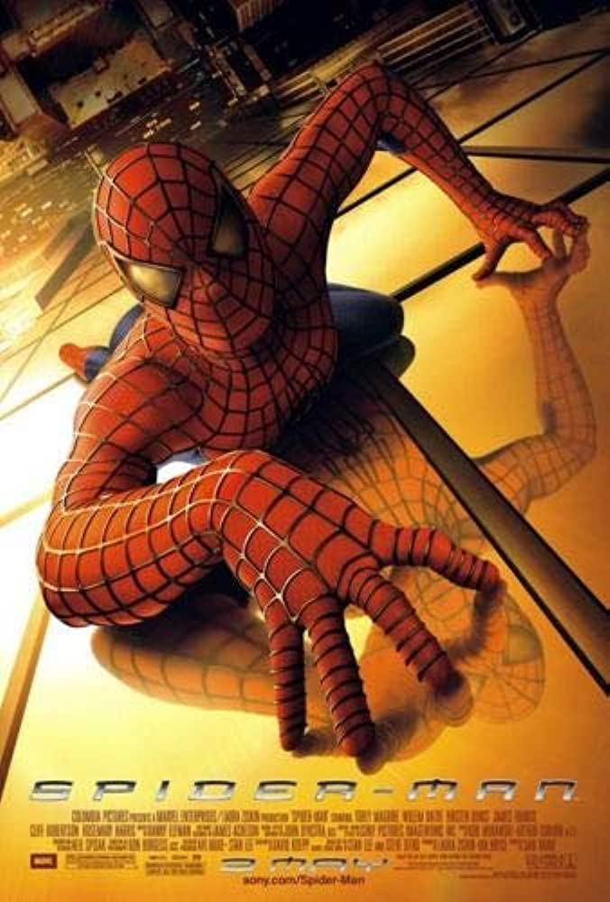
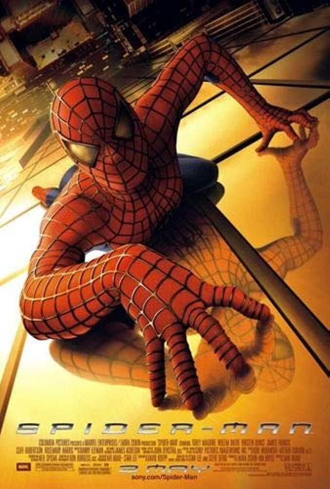

Most of my time nowadays is spent at school and work so I do not get much free time. When I do have it I enjoy things like fishing, going to concerts, or learning some random computer skills. My music taste is not for everyone, but I like to listen to Metal/Hardcore, Pop, EDM, and Experimental. Some of my favorite artists are Kublai Khan TX, Death Grips, 100 gecs, Coheed and Cambria, and Gulch.
I am a big movie guy and usually spend what little free time I have watching a movie. I have a decent number of blu-rays, over one hundred in my collection. My favorite genres are horror/thriller and action. I watch foreign
films as well, usually Japanese or South Korean movies. My favorite movies are the ones that really make you think for a while after you watched them or an intense one that keeps your anxiety high.
Here's some of my favorites:
 
